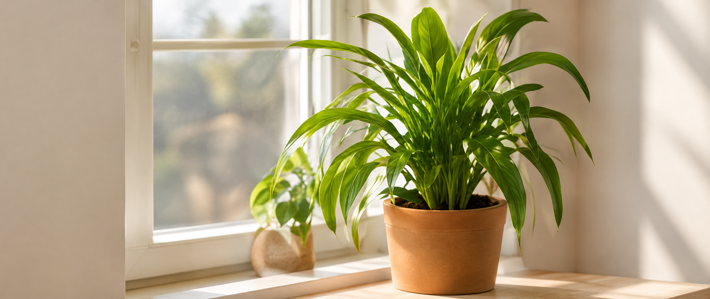
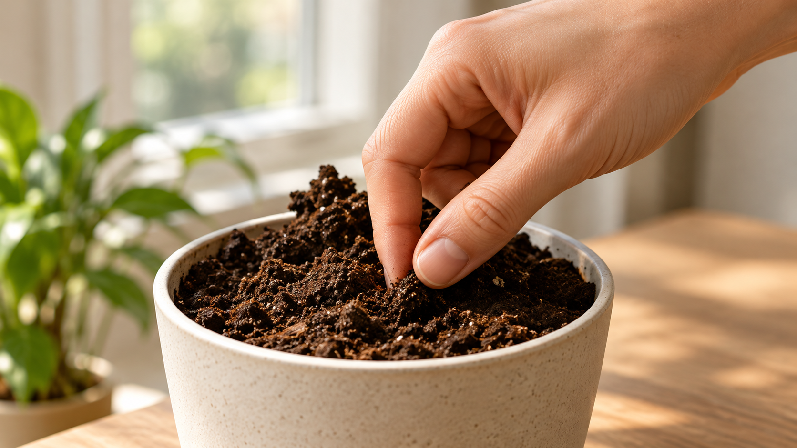
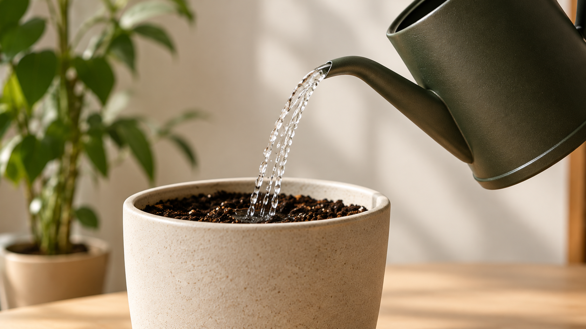

1. Find en god placering
De fleste stueplanter trives i lyst, indirekte lys. Undgå direkte sol i lange perioder.
Kom i gang i tre enkle trin.

De fleste stueplanter trives i lyst, indirekte lys. Undgå direkte sol i lange perioder.

Mærk efter, om jorden er tør, før du vander igen.
Stik en finger et par centimeter ned i jorden.

Vand, når jorden føles tør. Hellere lidt for lidt end for meget i starten